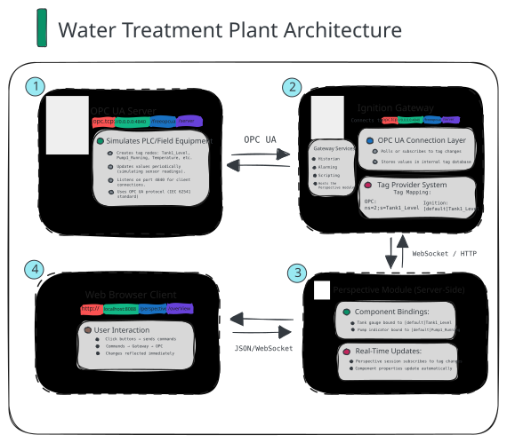
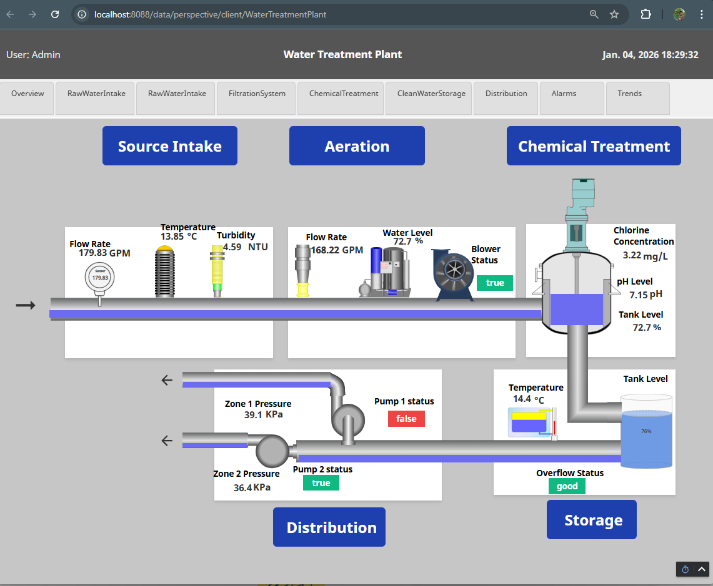
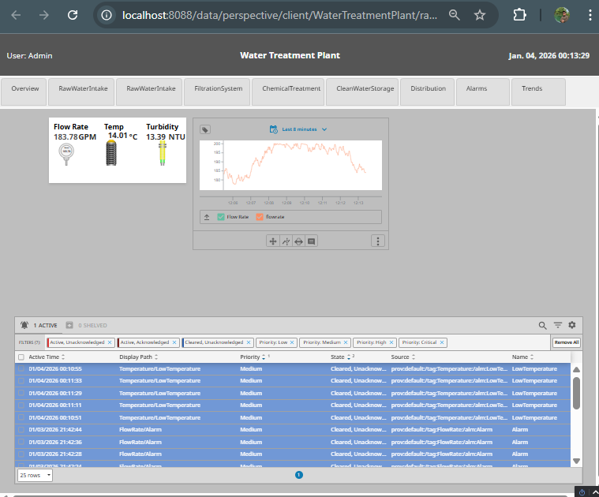
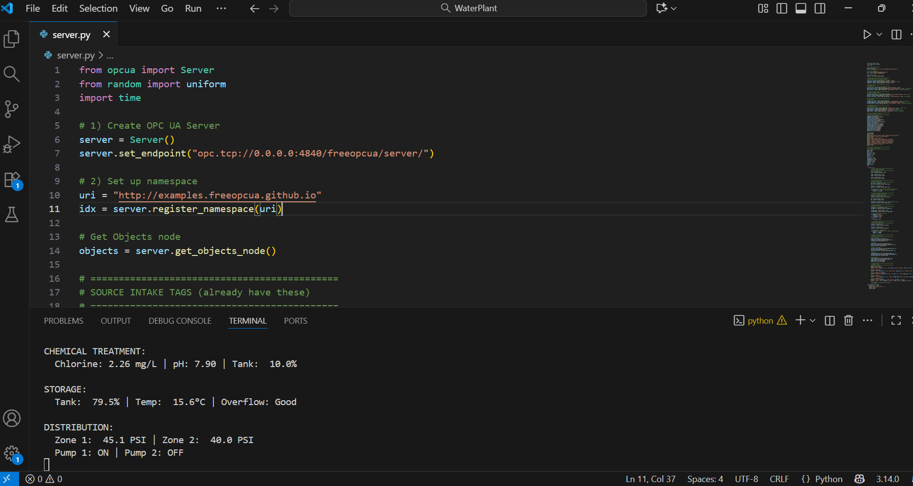

Water Treatment Plant - Ignition

Project Overview
I implemented this project after completing the training provided by Inductive University to gain hands-on experience with Ignition, OPC UA, and industrial automation concepts.
What does this project simulate?
This project simulates a full water treatment plant process, from raw water intake to treated water distribution. It uses Python to generate real-time process data via OPC UA and Ignition by Inductive Automation to visualize and control the system. The simulation demonstrates how industrial automation systems operate, providing hands-on experience with real-time monitoring, SCADA visualization, and rapid prototyping of control strategies.
Why simulate?
Real industrial automation systems often have limited access to live process data, which can make learning and prototyping challenging. By creating a simulated water treatment plant, I was able to experiment with Ignition’s capabilities,such as dashboards, alarms, and historical trends, using realistic, dynamic data in a safe, hands-on environment.



How It Works?
The Python program simulates a real water treatment plant and generates realistic sensor data for each stage of the process.
- Filtration: Pressure readings and filter cleaning status.
- Raw water intake: Water flow, temperature, and clarity.
- Chemical treatment: Chlorine levels, pH balance, and chemical tank levels.
- Clean water storage: Tank fullness, water temperature, and overflow warnings.
- Distribution: Pump on/off status, water pressure in different zones, and backup power status.
What's generating the data behind the scenes?
A Python script running as an OPC UA server. It creates realistic, time-varying data for all the process variables—mimicking what real sensors and equipment would send. This gives the Ignition system live data to work with, making the simulation feel like a real plant in operation.